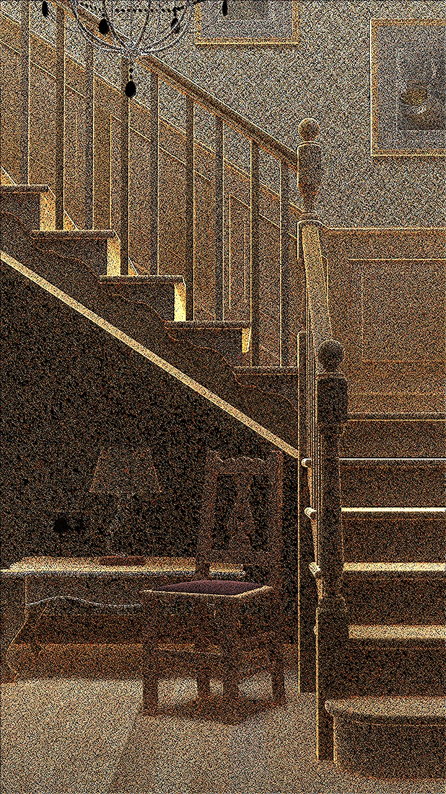

Technical Breakdown
This project is a CPU-based Monte Carlo path tracer implemented in C++ and DirectX. The architecture supports global illumination through features like BVH acceleration, multiple importance sampling, emissive/environment lighting, a layered BSDF system, light tracing, and denoising with Intel OIDN. It is based on modular code structure, aiming for realism and performance.
1. Bounding Volume Hierarchy (BVH)
The scene geometry is organized into a binary BVH using axis-aligned bounding boxes. Median splitting along the longest axis creates a recursive hierarchy until leaves contain ≤6 triangles or max depth is reached. This minimizes traversal cost and maximizes spatial coherence. Ray-AABB tests are performed top-down. Below: BVH visualization and simplified traversal code.
if (ray.intersects(node.bounds)) {
if (node.isLeaf()) {
checkTriangles(node);
} else {
traverse(node.left);
traverse(node.right);
}
}2. Multithreaded Tile-Based Rendering
The image is split into tiles distributed to worker threads using an atomic job queue. This achieves up to 12× speedup on multi-core CPUs compared to sequential rendering.
3. Adaptive Sampling (Experimental)
A variance-based adaptive sampling strategy was implemented, assigning more samples to noisy tiles. However, limited gains were observed due to unstable low-sample variance and tile management overhead.
4. Layered BSDF & Glass Material
The BSDF system supports layering diffuse, reflective, and transmissive components. The physically-based glass model uses Fresnel equations and Snell’s Law. Since it’s delta-distributed, PDFs are zero. Sampling is weighted by Fresnel reflectance:
if (rand < fresnel) reflect(); else refract();5. Environment Lighting & MIS
HDR environment maps are sampled using a 2D CDF based on luminance×sin(θ), supporting efficient importance sampling. Multiple importance sampling (MIS) combines BSDF and light sampling using the balance heuristic:
>weight = lightPdf / (lightPdf + bsdfPdf);Without MIS
With MIS + CDF
6. Light Tracing
Light paths are traced from emissive surfaces to the sensor, with connection attempts weighted by sensor response. This improves caustics and indirect illumination.
// Sensor weight for light tracing
float we = 1 / (A_film * pow(cosTheta, 4));7. Denoising with OIDN
Intel Open Image Denoise is integrated into the film pipeline. It leverages normal and albedo buffers to filter noisy outputs while preserving detail.
Before
After OIDN
8. Limitations & Future Work
Microfacet GGX BRDF and instant radiosity transport were not implemented due to time constraints. Future work may include these features for increased realism and sample efficiency.
How to Run
- Clone the project:
https://github.com/xpt07/RTBase.git - Open in Visual Studio (Release mode)
- Run with:
-scene materials -spp 8192 - Controls: WASD + EQ, P to save image
{kind=link}